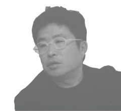

会社概要・プロフィール
大阪の一級建築士事務所「有限会社アークスコーベ」代表で建築家 石丸信明は、、
建築設計・企画や各種デザインをはじめ映像分野ほかさまざまな活動を行っています。このページでは、石丸の経歴や、
現在所属する団体や務める役職、これまでの受領歴などプロフィールをご紹介します
会社概要
| 名称 | 有限会社アークスコーベ 一級建築士事務所 大阪府知事登録（ニ）17219号 |
|---|---|
| 代表 | 石丸信明 |
| 業務 | 建築設計、監理、建築企画コンサルティング、インテリア・家具デザイン、プロダクツデザイン |
| Tel | 06-6136-1070 |
| Fax | 06-6136-1071 |
| info@arxkobe.com | |
| 所在地 | 〒530-0041 大阪市北区天神橋2-2-23 アークスビル |
| その他 | 「建築家賠償責任保険」加入済み |
PROFILE～石丸信明 NOBUAKI ISHIMARU
ごあいさつ

「空間」を作りながら「人間の生活」をデザインする
空間・時間・人間という言葉にはそれぞれ
「間 / あいだ」という文字が入っています。
空間は空の間、時間は時の間、人間は人の間です。
ARX KOBEは、空間・時間・人間そのものも大切なことと考えますが、その関係性をよりよくできる空間を作り続ける事務所でありたいと考えています。
経歴
| 1957年 | 兵庫県神戸市に生まれる |
|---|---|
| 1979年 | 大阪大学工学部建築工学科卒業 |
| 1982年 | 安藤忠雄建築研究所入所 |
| 1988年 | ARCHITEXTUREを結成 |
| 1992年 | 安藤忠雄建築研究所退所 |
| 1993年 | ARX KOBE設立 |
| 1998年 | 有限会社アークスコーベに改組 |
| 2000年4月 | 近畿大学文芸学部非常勤講師 |
| 2003年 | 兵庫県肢体不自由児者協会 理事 |
| 2009年 | 関西大学環境都市工学部非常勤講師 |
所属・役職
| 2002年～ | NPO法人エコデザインネットワーク 理事 |
|---|---|
| 2003年～ | （社）日本建築家協会 近畿支部 会員 |
| 2004年～ | NPO法人 人・家・街 安全支援機構 理事 |
| 2004年～ | 社団法人 日本建築家協会 登録建築家 |
受賞歴
| 1993年 | シュプレーボーゲン国際コンペ8位入賞（ARXのメンバーとして） |
|---|---|
| 1994年 | 「伏見の酒蔵コンペ」入賞 |
| 2001年 | 映像作品「六甲の山荘『在』」が |
| □The 22nd annual Terry Awards. FINALIST入選 | |
| □World media Festival ドキュメンタリーその他の部門金賞 | |
| □The 34th annual International Film and Video Festival クリエーティブエクセレンス賞（第3位） |
|
| 2002年 | Reco worktableが（社）日本インテリアデザイナー協会 JID賞 インテリアプロダクト部門奨励賞 |
| 2003年 | Reco worktableがIDRA記憶のデザインコンペティション優秀賞受賞 |
| 2006年 | 関西国際大学リサーチ＆カウンセリング棟が 第13回空間・デザインコンペティション作品例部門 佳作 |
| 2007年 | 関西国際大学水棹館が平成19年関西照明技術普及会賞 |
| 2009年 | 映像エッセイ「天神橋のイエ（Home in Tenjinbashi）」が ワールドメディアフェスティバル（ドイツ）銀賞受賞 |
-
- 石丸が代表を務める
一級建築士事務所 - アークスコーベ
- 石丸が代表を務める
-
- 石丸信明の個人ページ
- Facebookページ
-
- 日々の気づきを
写真で更新しています
- 日々の気づきを